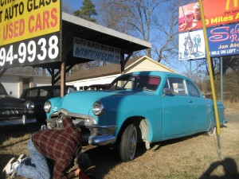
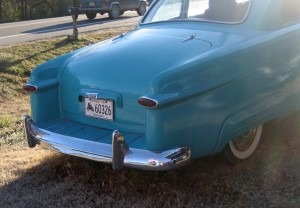
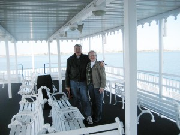
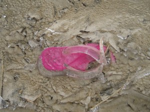

Shortning Winter
 This what winter in Minnesota sometimes looks like. I’m standing on the county blacktop road in front of my place. As you can see there is no problem with traffic for taking pictures. I think the wind was gusting to about 35 mph with the temp below zero Fahrenheit. I couldn’t say for sure if it was snowing because all the snow was moving side ways.
This what winter in Minnesota sometimes looks like. I’m standing on the county blacktop road in front of my place. As you can see there is no problem with traffic for taking pictures. I think the wind was gusting to about 35 mph with the temp below zero Fahrenheit. I couldn’t say for sure if it was snowing because all the snow was moving side ways.
When I went back inside, the words of a friend Clarence Mages, came to me. “Rod even the ducks know enough to go south when it turns cold”. It wasn’t long we had the car loaded, the heat turned down, water shut off and the other details taken care of. We headed south without a plan. No schedule, no timetable, Just some cash and a credit card.
By the time we got to Arkansas it was comfortable in shirt sleves. We stopped at antique stores, junk shops and whatever caught our eye. below are pictures of a custom 49 Ford I looked at.The light was wrong for picture taking but two did turn out. He had many projects under way and some really cool customs. If you ever get to Mena AR stop at LAWRY’S USED CAR’s and check it out.

That Ford body was on a S-10, using the chassis, engine, drive train,dash, firewall, controls and much of the interior. The rear of the Ford body was extended to match the longer wheel base.
We found warm weather for a couple of days in Galveston, TX. We took a boat ride on a paddle wheel boat in the bay as the gulf was too rough. I and Donna enjoyed walking in the historic district, touring old houses and checking out the antique shops. Than as the weather cooled we headed down to South Padre Island. We had a few day of beautiful weather and enjoyed walking the beach. Our room had a balcony over looking the gulf and the sun rises were beautiful. Then the temp dropped to 28 degrees one night and the rain turned to sleet. the only bridge to the island was closed, The help couldn’t get to work in the hotel. They had 15 minuet rolling black out at random intervals, so people would get stuck in the hotel elevators at times. We had about a quarter to one half inch of ice on things, I don’t think it would have been noticed in MN. Brownsville shut everything down for two days.


Called a friend at home the morning it was 28 degrees. He told me it was 35 degrees and the sun was shinning in MN.
 Yes we still walked the beach when it turned cold and the wind was gusting to 28 MPH. I was amazed the sand drifted like snow and I liked the sound of the gulf. This is a picture we took on the beach the morning after the Ice storm.

After wandering around for a bit we headed over to Jay, Florida. Donna’s brother Gene and sister Doreen live in that aria. Her brother has been fighting cancer. We wanted to see how he was doing. As the picture shows he looks great.
Back home again the weather looks about the same as when we left.
We had a great time but it is good to be home again